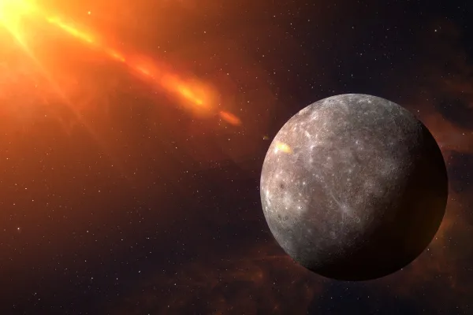

Mercurio
Mercurio es el planeta rocoso más pequeño (~4,880 km de diámetro) y cercano al Sol, con una órbita de 88 días. Su superficie llena de cráteres y la falta de una atmósfera densa provocan temperaturas extremas (de 430 °C a -180 °C). Además, posee un campo magnético débil y una dinámica particular por su órbita excéntrica y rotación lenta.